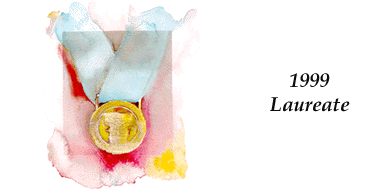

1999 Innovation Collection
Department of Defense Breast Cancer Decision Guide

Laureate: Science Applications International Corporation, Amzi! Inc., and
the U.S. Department of Defense (U.S. Army Medical Research and Materiel
Command)
Automated reasoning software filters the vast amount of information
available about breast cancer to deliver materials that are relevant to
individual patients' particular circumstances, empowering patients to take
an active role in their care.
The Department of Defense Breast Cancer Decision Guide (http://www.bcdg.org)
aids medical decision-making by providing patients and family members with
custom- generated information (via automated reasoning system) that is
specific to an individual's breast cancer diagnosis and personal situation.
The Department of Defense Breast Cancer Decision Guide (http://www.bcdg.org)
is a website designed to assist breast cancer patients and their family
members in medical decision-making. It does this by providing users with
personalized information that can improve the understanding of a specific
breast cancer diagnosis and the treatment options that are likely to apply
when that diagnosis and other patient-specific factors (both medical and
non-medical) are taken into account. The information technology developed
for the Decision Guide's interactive consultations filters out information
that is not relevant and selects all information that is relevant, including
information that the user might not have known to access. It then organizes
the relevant information into a concise and clearly written report that
includes options for verifying that the information applies and for seeking
additional information. In addition to empowering breast cancer patients
and their family members with the information needed to participate in
meaningful discussion and informed decision-making with physicians and
other healthcare professionals, the Decision Guide demonstrates the general
utility of its new technology. Web-based decision support systems that
address complex medical and non-medical subject areas in "real-time" can
provide the means for saving time, saving money, and saving lives. The
Decision Guide is a project of the Department of Defense Breast Cancer
Prevention, Education and Diagnosis Program Initiative funded by U.S. Army
Medical Research and Materiel Command Contracts DAMD17-93-C-3141 and DAMD17-96-C-6131.
Nominated By: PricewaterhouseCoopers
Category: Government & Non-Profit Organizations
|
Innovation Network
software provided by
|